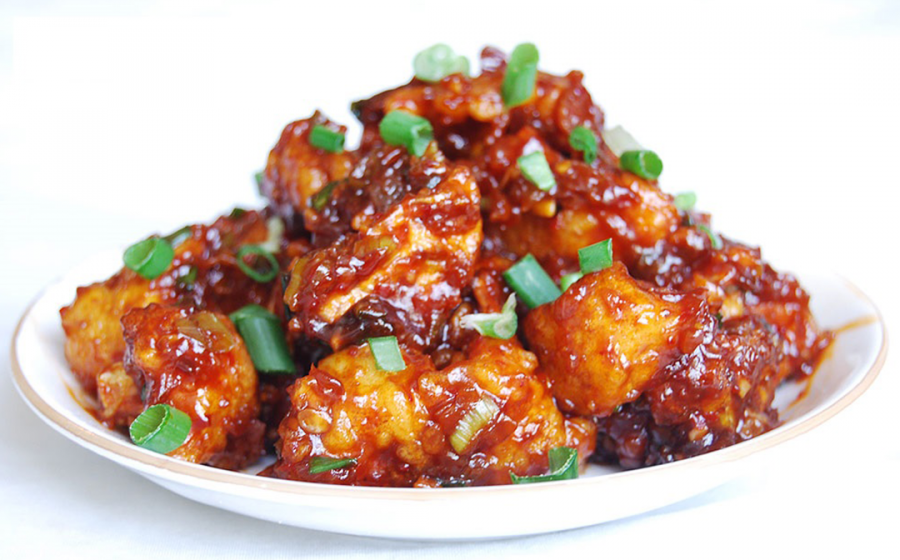

Chicken Manchurian
Ingredient
- Maggi Hot and Sweet Sauce- 2 tablespoons.
- Maggi Magic Cubes-Chicken- 2 cubes, crumbled.
- Boneless Chicken Thighs- 400 grms, cut into strips.
- Eggs- 1 beaten.
- Corn Flour- 8 tablespoons.
- Dark Soya Sauce- 3 tablespoons.
- Oil- 4 tablespoons(For Frying).
- Spring Onion Green- 3 tablespoons, chopped.
- Spring Onions- 3-4, sliced.
- Green Chillies- 2, chopped.
- Ginger- 1 tablespoon, finely minced.
- Garlic- 1 tablespoon, finely minced.
- Water- 3 cups.
- Salt to taste.

Methods
- Mix the egg, 6 tablespoons of corn flour, salt and 1 tablespoon
of soya sauce in a bowl. Add the chicken pieces to the bowl and
set it aside for half an hour.
- Heat oil in a wok and deep fry the marinated chicken pieces. Drain
on an absorbent paper and keep it aside.
- Heat 4 tablespoons of oil in a separate wok. Add ginger, garlic
and stir-fry for a minute. Add the sliced onions along with green
chillies and continue to stir-fry for another minute.
- In a bowl, mix together crumbled Maggi Magic Cubes (Chicken), Maggi
Hot & Sweet Sauce, water, 2 tablespoons of corn flour and 2 tablespoons
of soya sauce. Add this mixture to the onions (sliced) and bring to a
boil, stirring constantly. Cook for one minute.
- Add the fried chicken pieces and mix well. Simmer for a minute. Garnish
with chopped spring onions. Serve hot.